Explore Ouro Preto
A Brief History
Ouro Preto boomed after gold discoveries in the 1690s Minas Gerais rush. Hillside churches by Aleijadinho, mine owner mansions, and cobblestone squares record baroque patronage funded by colonial Brazil's richest gold district. Mine tours and Aleijadinho church trails extend baroque hill towns across Minas Gerais gold country. Walking routes through the historic centre help visitors relate these monuments to wider patterns of settlement and civic life in Brazil.
Attractions Map
Top Sights & Activities
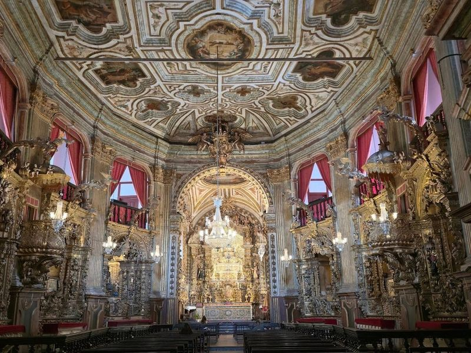
Basílica Nossa Senhora do Pilar
Basílica Nossa Senhora do Pilar is a revered Catholic church located in Ouro Preto, Brazil. The church boasts a richly decorated interior covered with 400 pounds of gold and silver leaf. It features gold- and silver-clad sculptures, paintings by Bernardo Pires, and two massive angels made of solid silver.
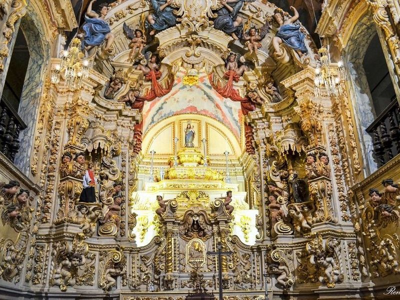
Church of Santa Efigenia
The Church of Santa Efigenia is a must-visit historical site in Brazil, known for its captivating history and architecture. Situated atop a hill, the 18th-century church offers magnificent panoramic views of the city from its churchyard. Legend has it that the church was constructed by slaves, including one who would later be called Chico King.
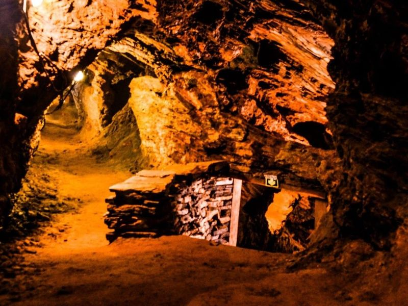
Mina Du Veloso
Mina Du Veloso is a former gold mine featuring a 400-meter underground chamber supported by pillars. Visitors are guided through the mine to learn about Brazil's gold mining history, the techniques used by enslaved Africans, and the miners' daily lives and customs. Tours are available in Portuguese and English. The experience offers an insightful look into the reality of working in an old gold mine, with guides providing historical and geological information.
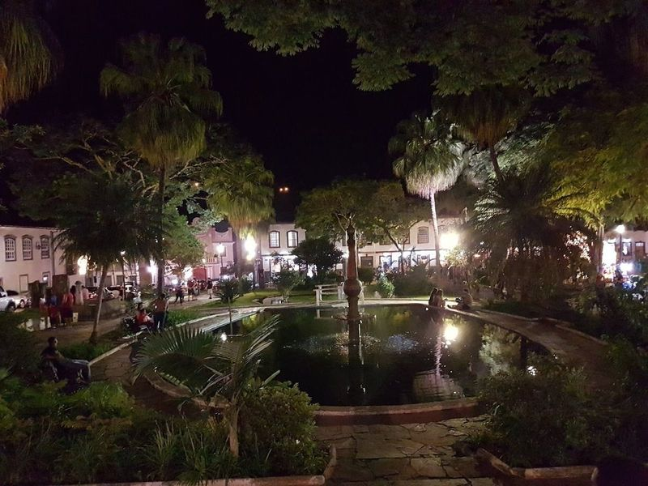
Praça Gomes Freire
Praça Gomes Freire is an outstanding destination in Mariana, offering a warm and inviting atmosphere with numerous dining establishments, coffee houses, and ice cream parlors. With its wide array of amenities, the plaza promises a delightful afternoon experience. It serves as a beloved spot for leisure activities outdoors – a tranquil and picturesque location perfect for relaxation and enjoyment.
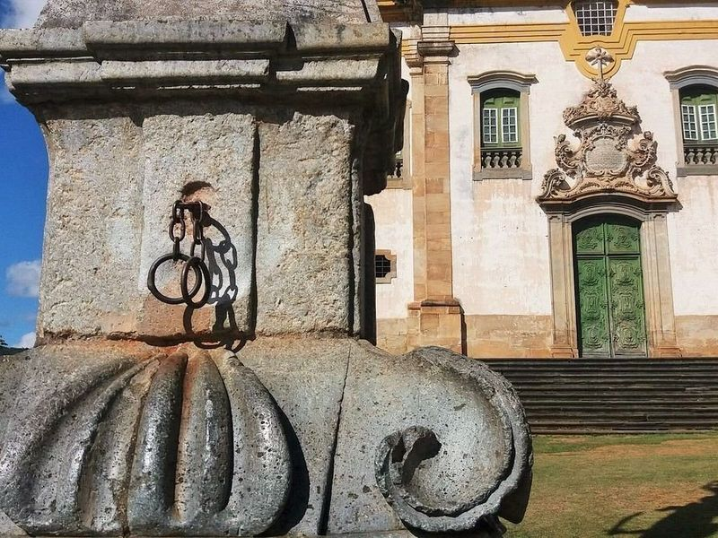
Pelourinho - Mariana MG
The Mariana Train Station museum evokes a sense of longing for the past, with its historical significance and captivating exhibits. This place transports visitors to an era filled with memories and emotions. The establishment showcases a diverse collection that encompasses various aspects of transportation history. It offers a unique showcase of artifacts, displays, and memorabilia from the bygone days of train travel.
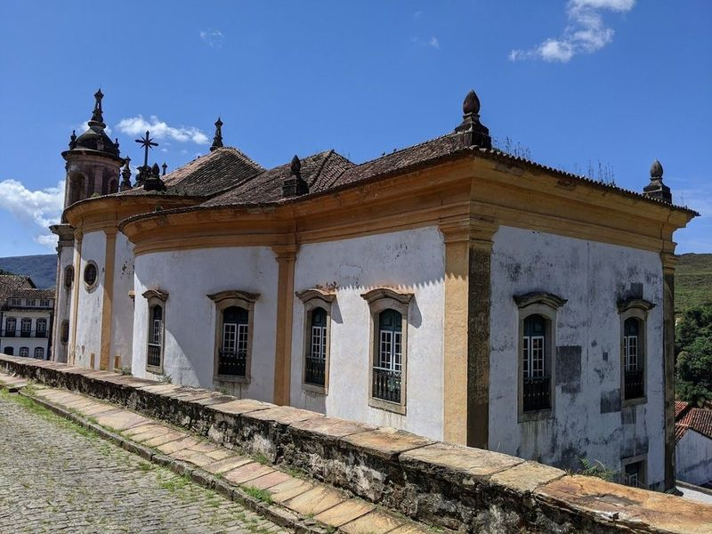
Igreja de Nossa Senhora do Rosário
Nestled in the charming town of Ouro Preto, the Igreja de Nossa Senhora do Rosário stands out as a example of Baroque architecture. Renowned for its elliptical nave that symbolizes infinity, this church is often celebrated as original expressions of Brazilian Baroque art.
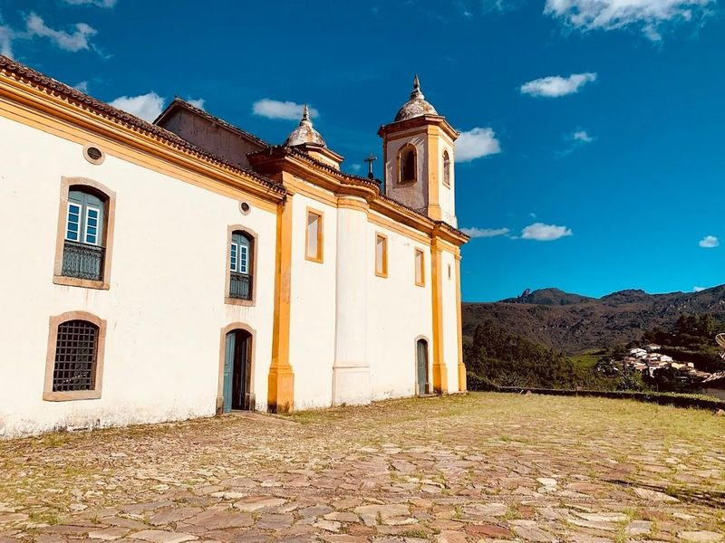
Church of Saint Francis of Assisi
The Church of Saint Francis of Assisi is an 18th-century Roman Catholic church renowned for its exquisite design and lavishly painted interior. Constructed in 1768 by the celebrated Baroque artist Aleijadinho, it stands as one of Ouro Preto's most architectural landmarks.
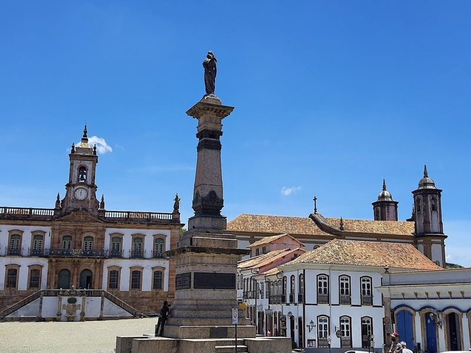
Tiradentes' Statue
Nestled in the heart of Ouro Preto, Tiradentes' Statue stands proudly in Tiradentes Square, serving as a poignant tribute to the martyr of Inconfidência Mineira. This monument symbolizes Brazil's enduring struggle for freedom and independence. The square itself is a picturesque blend of colonial architecture, with charming mansions, museums, and inviting restaurants surrounding it.

Descubra Gerais Turismo
Descubra Gerais Turismo is listed among principal sites for Ouro Preto within Brazil. Municipal and regional heritage listings document its place in the historic centre and travellers routes through Ouro Preto. Descubra Gerais Turismo is listed among principal sites for Ouro Preto within Brazil.
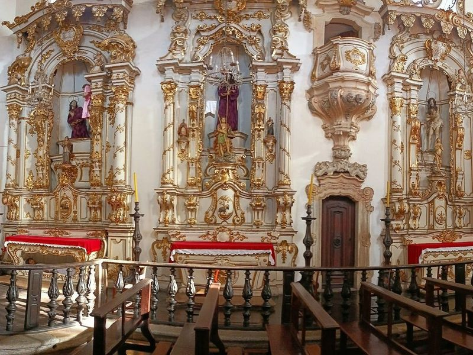
Igreja de Nossa Senhora do Carmo
The Igreja de Nossa Senhora do Carmo, completed in 1776, showcases the final works of renowned Brazilian sculptor Aleijadinho. Originally designed by Aleijadinho's father and later enhanced by the artist himself, this church features rococo elements and soapstone sculptures of angels above its entrance. Frequented by Ouro Preto's high society when inaugurated, it also houses the only examples of decorative Portuguese tiles from that period in Minas Gerais.
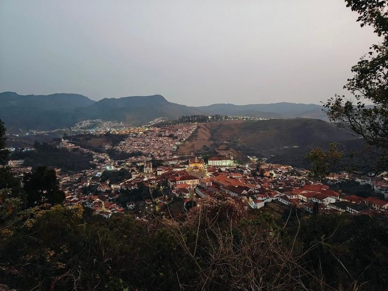
Morro São Sebastião Lookout
Morro São Sebastião Lookout is a hill located in the charming town of Ouro Preto, offering panoramic views of Tiradentes Square and the historic Antonio Dias neighborhood. The ascent to this lookout can be quite steep, making it an invigorating trek for those who enjoy a bit of exercise.
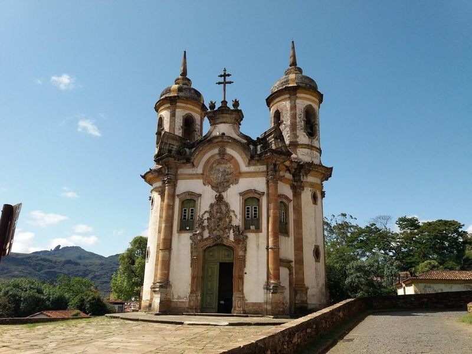
Ponto 5 - Casa Aleijadinho
Casa Aleijadinho is a must-visit destination known for its churches, including the Carmo Church and the Pilar Church, which is adorned with gold and holds the status of a Basilica. The Sao Francisco de Assis Church is considered a baroque masterpiece, featuring paintings by Mestre Athayde and carvings by Aleijadinho. This location was the first in Brazil to be designated as a UNESCO World Heritage site due to its historical significance.
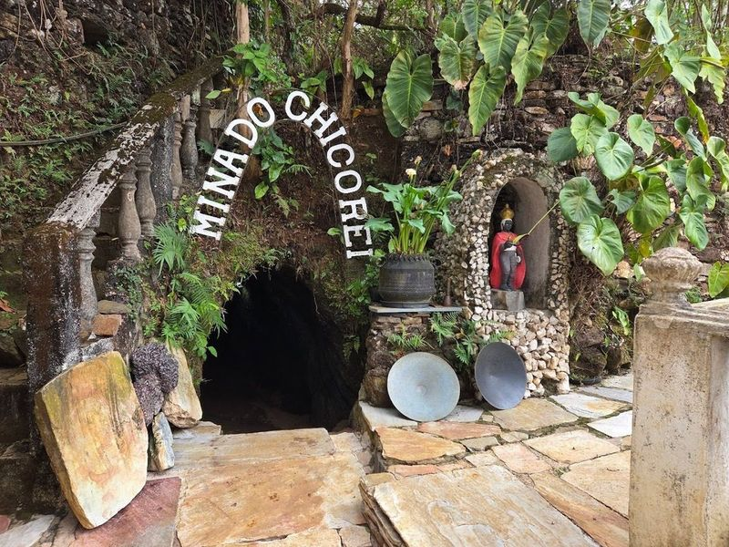
Mina Chico Rei
Nestled in the enchanting town of Ouro Preto, Brazil, Mina Chico Rei stands as a testament to both history and adventure. This remarkable gold mine is not only the largest open to visitors globally but also steeped in fascinating stories. As you journey through its underground galleries aboard an old mining trolley, traverse 315 meters of tunnels that echo with tales from the past. The scenery includes aquifers that once filled these historic passages.